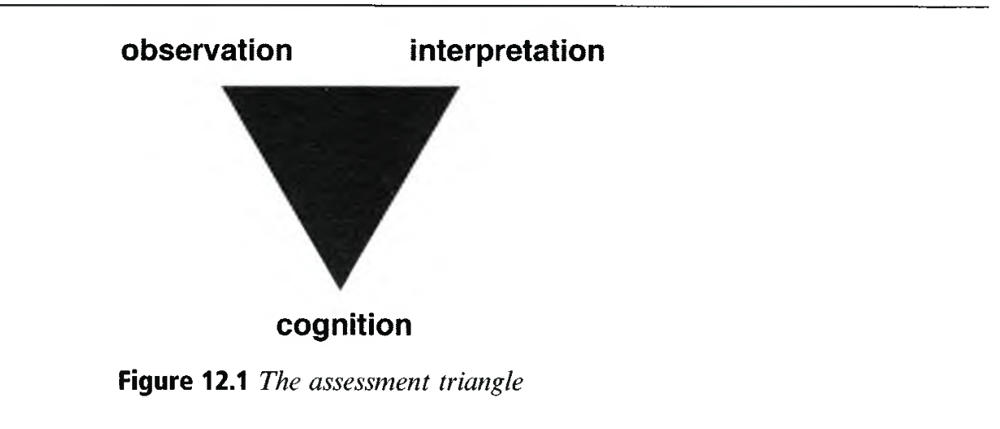
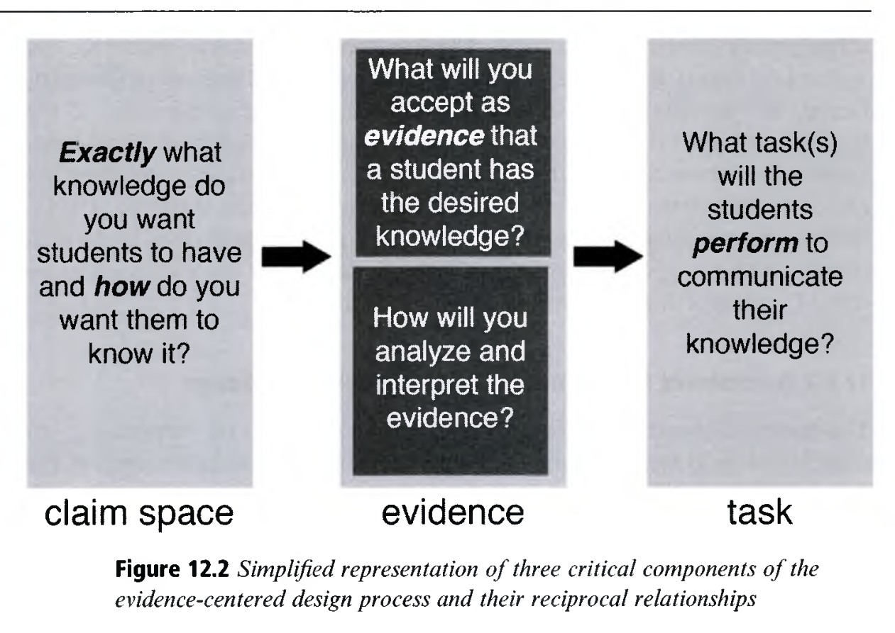
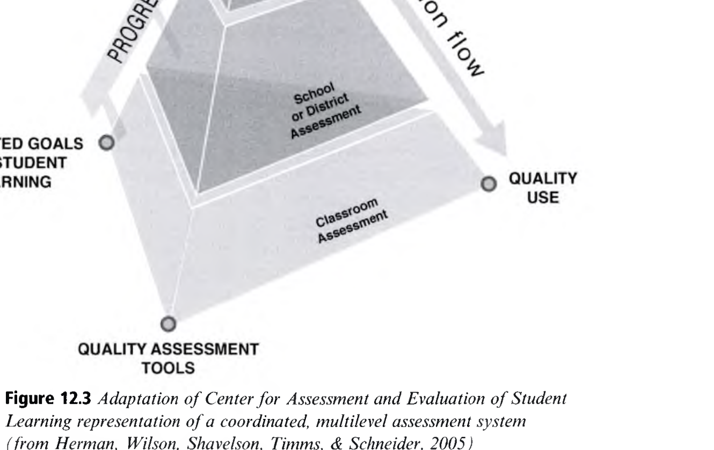

Assessment in Education
학습과학 관점의 교육 평가 설계: 평가 삼각형, 증거 중심 설계, 그리고 균형 잡힌 평가 체제
👥 저자 및 출처
James W. Pellegrino (University of Illinois at Chicago)
『The Cambridge Handbook of the Learning Sciences』 (3rd Ed., 2022, pp. 238–258)
🎯 챕터 핵심 아젠다
- 평가 삼각형 (Assessment Triangle, Figure 12.1): 인지-관찰-해석
- 증거 중심 설계 (ECD, Figure 12.2): 학생 모델, 과제 모델, 증거 모델
- 학습 진행 경로 (Learning Progressions, LPs)
- 균형 잡힌 평가 체제 (Balanced Assessment, Figure 12.3)
🎯 강의 목표 및 핵심 맥락 (Context & Goal)
본 장은 학습과학과 심리측정학의 융합을 이끈 제임스 펠레그리노 교수의 평가 이론을 바탕으로, 단순 지필고사를 넘어 고차원적 인지 역량을 측정하는 '증거 중심 평가 설계'의 전모를 탐구합니다.
📖 원문 심층 학술 해설 (Detailed Academic Commentary)
펠레그리노 교수는 2001년 NRC의 전설적 보고서 『Knowing What Students Know』의 위원장으로서, 평가를 단순한 시험지가 아니라 '증거에 기반한 인과적 추론 과정(Process of reasoning from evidence)'으로 재정의했습니다.
💡 수업/세미나 진행 팁 & 질문 가이드
"우리가 학생들에게 시험을 볼 때, 그 점수가 정말 학생 머릿속의 지식을 정확히 대변하고 있다고 확신할 수 있을까요?"라는 질문으로 시작하세요.
교육 평가의 3대 핵심 목적과 시공간 척도
평가는 단일한 만능 도구가 아니며, 목적에 따라 명확히 차별화되어야 한다 (Berman et al., 2019)
1. 학습을 돕기 위한 평가
형성평가 (Formative)
수업 중 학생의 오개념과 인지적 병목을 진단하고, 교사의 맞춤형 처방 및 학생의 자기조절 피드백 제공 (Micro/Meso)
2. 학습에 대한 평가
총괄평가 (Summative)
단원, 학기 종료 후 학습자의 최종 역량 도달 수준을 판정하고 성적 부여 및 자격 인증 (Meso/Macro)
3. 프로그램/정책 평가
책무성 평가 (Policy)
학교 및 국가 수준에서 교육과정의 효과성을 검증하고 시스템을 모니터링 (NAEP, PISA, 수능) (Macro)
🎯 강의 목표 및 핵심 맥락
교육 평가의 3대 목적(형성, 총괄, 정책)과 시공간 척도(Micro, Meso, Macro)의 상호 관계를 명확히 이해시킵니다.
📖 원문 심층 학술 해설
하나의 평가 도구로 세 가지 목적을 모두 달성하려는 시도는 대부분 실패합니다. 각 목적마다 요구되는 인지 모델의 해상도와 신뢰도 기준이 완전히 다르기 때문입니다.
💡 수업/세미나 진행 팁 & 질문 가이드
교실에서 매주 보는 퀴즈가 '형성평가'로 기능하려면 어떻게 피드백이 주어져야 하는지 논의하세요.
증거 기반 추론의 기초: 평가 삼각형 (The Assessment Triangle)
모든 타당한 교육 평가는 인지, 관찰, 해석의 3대 꼭짓점이 정밀하게 정렬되어야 한다 (NRC, 2001)
📐 3대 꼭짓점의 상호 연결성
- 인지 (Cognition): 학생의 멘탈 모델과 역량 발달 경로 (LPs)
- 관찰 (Observation): 역량 발현 증거를 유도하는 수행 과제
- 해석 (Interpretation): 관찰된 행동을 인지 상태로 변환하는 측정 모형
- ➔ 세 꼭짓점이 어긋나면 평가의 타당도(Validity)는 붕괴됨!

🎯 강의 목표 및 핵심 맥락
원서 Figure 12.1 평가 삼각형의 3대 구성 요소(Cognition, Observation, Interpretation)의 메커니즘을 설명합니다.
📖 원문 심층 학술 해설
전통적 평가는 '관찰(문항 맞힘)'에서 곧바로 '점수'로 건너뛰며 인지 모델을 무시했습니다. 학습과학은 반드시 명시적인 '인지 모델'을 거쳐야만 올바른 해석이 가능하다고 역설합니다.
💡 수업/세미나 진행 팁 & 질문 가이드
"선다형 4지선다 문항을 맞혔다는 관찰 결과로부터 학생이 알고리즘을 깊이 이해했다고 추론할 수 있을까요?"
인지 모델의 나침반: 학습 진행 경로 (Learning Progressions)
초보적 소박 직관에서 전문가 수준으로 진화하는 경험적으로 검증된 발달 궤적
🧭 학습 진행 경로(LPs)의 특징
- 단순한 지식의 나열이 아닌, 개념이 정교화되는 인지적 사다리
- 대표적 오개념과 중간 단계 직관(Intermediate states)을 명시
- 평가 문항 설계자가 학생의 현재 인지적 위치를 진단하는 기준선
💡 컴퓨터교육 및 STEM의 LPs 적용
- 변수/제어문 LPs: 값 대입 오개념 ➔ 순차 흐름 ➔ 조건 분기 ➔ 루프 불변성
- 과학 물질의 입자성 LPs: 연속체 직관 ➔ 입자 모형 ➔ 원자/분자 상호작용
🎯 강의 목표 및 핵심 맥락
평가 삼각형의 첫 번째 꼭짓점인 '인지 모델'을 채우는 핵심 토대로서 '학습 진행 경로(Learning Progressions)'를 설명합니다.
📖 원문 심층 학술 해설
Duschl et al. (2007)과 NRC (2007) 보고서: LPs는 교육과정, 수업, 평가를 하나로 묶어주는 거대한 인지 지도(Cognitive Map)입니다.
💡 수업/세미나 진행 팁 & 질문 가이드
자신이 가르치는 교과목에서 학생들이 반드시 거치는 '중간 단계 오개념 사다리'를 그려보세요.
증거 중심 설계 (Evidence-Centered Design: ECD)
로버트 미슬레비(Robert Mislevy, 2019)의 표준 평가 문항 개발 공학 프레임워크
🏗️ ECD의 3대 핵심 모델 체계
- 1. 학생 모델 (Student Model): 측정하려는 지식/역량(KSAs)
- 2. 과제 모델 (Task Model): 증거를 유도하는 시뮬레이션 환경/상황
- 3. 증거 모델 (Evidence Model): 행동을 점수로 변환하는 채점 루브릭

🎯 강의 목표 및 핵심 맥락
원서 Figure 12.2 증거 중심 설계(ECD)의 학생 모델, 과제 모델, 증거 모델의 연계 아키텍처를 상세히 제시합니다.
📖 원문 심층 학술 해설
ECD는 "어떤 문제를 낼까?"부터 고민하는 아마추어식 출제를 방지하고, "어떤 역량을 측정할 것인가(학생 모델) ➔ 어떤 증거가 필요한가(증거 모델) ➔ 그 증거를 어떤 과제로 유도할 것인가(과제 모델)"의 역방향 설계를 강제합니다.
💡 수업/세미나 진행 팁 & 질문 가이드
코딩 테스트 문항을 만들 때 ECD의 3단계를 적용하는 실습을 진행하세요.
평가 타당도: 케인의 논증 기반 타당도 (Kane, 2013)
타당도는 도구의 고정된 속성이 아니라, 관찰에서 추론으로 이어지는 '해석/활용 논증의 사슬'이다
🔗 해석 및 활용 논증 (IUA)의 4단계 사슬
- 채점 (Scoring): 관찰된 수행 ➔ 관찰 점수
- 일반화 (Generalization): 관찰 점수 ➔ 과제 영역 전체 점수
- 추론 (Extrapolation): 과제 점수 ➔ 실제 세계의 목표 인지 역량
- 결정/활용 (Decision/Use): 인지 역량 판정 ➔ 교육적 처방
⚠️ 가장 약한 연결고리가 타당도를 결정함
아무리 채점이 정확해도(1단계), 그 시험이 실제 세계 역량으로 외삽(3단계)되지 않는다면 전체 평가의 타당도는 0이 됨!
🎯 강의 목표 및 핵심 맥락
마이클 케인(Michael Kane, 2013)의 '논증 기반 타당도(Argument-based Validity)' 개념을 학습과학적 맥락에서 정립합니다.
📖 원문 심층 학술 해설
평가 타당도는 "이 시험은 타당하다"는 단발성 증명이 아니라, 4단계 논증 사슬 중 어느 하나라도 결함이 없는지 지속적으로 반증하는 '주장-증거 논증 과정'입니다.
💡 수업/세미나 진행 팁 & 질문 가이드
선다형 시험으로 코딩 실력을 측정하려는 시도가 왜 3단계(외삽)에서 타당성이 깨지는지 설명하세요.
교실 평가의 혁신: 형성평가와 피드백 루프
판관의 평가에서 '학습을 돕는 형성적 나침반'으로의 패러다임 전환 (Black & Wiliam, 1998)
🔄 효과적인 형성평가 피드백 3대 질문
- 1. 어디로 가고 있는가? (Feed Up): 학습 목표의 가시화
- 2. 지금 어디에 있는가? (Feed Back): 현재 상태 진단
- 3. 다음엔 어디로 가야 하는가? (Feed Forward): 구체적 실천 처방
👥 자기조절학습(SRL)과 동료 평가
- 루브릭을 활용한 자기 평가(Self-assessment) 훈련
- 동료 간 비판적 피드백(Peer feedback)을 통한 메타인지 활성화
🎯 강의 목표 및 핵심 맥락
교실 형성평가가 가져오는 거대한 학업 성취 향상 효과(Black & Wiliam, 1998)와 실천적 피드백 루프(Hattie & Timperley)를 분석합니다.
📖 원문 심층 학술 해설
단순히 정답/오답만 알려주는 피드백은 효과가 미미하지만, "다음 단계로 무엇을 공부해야 하는지"를 명시하는 Feed Forward 피드백은 학습 효과 크기(d)가 0.7을 상회합니다.
💡 수업/세미나 진행 팁 & 질문 가이드
자신이 학생들에게 주는 피드백이 'Feed Back'에 머물러 있는지, 'Feed Forward'까지 나아가는지 점검하세요.
차세대 심리측정 모형: 진단분류모형 & 베이지안 네트워크
1차원 총점을 넘어: 다차원 지식 요소(Knowledge Components)의 실시간 프로파일링
📊 진단분류모형 (DCMs)
- 학생의 역량을 단일 점수(예: 85점)가 아닌 다차원 지식 마스터리 벡터 [1, 0, 1, 1]로 진단
- 어떤 세부 개념이 부족하고 어떤 오개념을 가졌는지 정밀 처방
🤖 베이지안 지식 추적 (BKT & Bayes Nets)
- 컴퓨터 기반 복합 시뮬레이션 환경에서 학생의 클릭 로그로부터 인지 상태를 실시간 확률적으로 갱신
- 지능형 튜터링 시스템(ITS)의 핵심 평가 엔진
🎯 강의 목표 및 핵심 맥락
고전검사이론(CTT)과 단순 IRT를 넘어선 차세대 심리측정 모형(DCMs, Bayesian Networks)의 원리를 설명합니다.
📖 원문 심층 학술 해설
학습과학의 미세 지식 조각(p-prims, KCs) 이론은 심리측정학의 진단분류모형(DCMs)과 결합할 때 비로소 수학적으로 완벽한 평가 모델로 구현됩니다.
💡 수업/세미나 진행 팁 & 질문 가이드
다음 챕터인 Chapter 13(학습분석학 및 EDM)과 어떻게 직결되는지 힌트를 제공하세요.
균형 잡힌 평가 체제: CAESL 모델 (Figure 12.3)
형성평가, 총괄평가, 정책평가가 하나의 학습과학 인지 모델로 통합된 이상적 생태계
🌟 균형 잡힌 평가의 3대 필수 원리
- 1. 포괄성 (Comprehensiveness): 다각적 평가 방식의 조화
- 2. 일관성 (Coherence): 동일한 학습진행경로(LPs)에 정렬
- 3. 연속성 (Continuity): 종단적 성장 궤적 지속 추적

🎯 강의 목표 및 핵심 맥락
원서 Figure 12.3의 CAESL 모델을 바탕으로 '균형 잡힌 평가 체제(Balanced Assessment Systems)'의 3대 원리를 설명합니다.
📖 원문 심층 학술 해설
오늘날 교육의 비극은 교실에서 가르치는 깊은 탐구(형성평가)와 국가에서 치르는 표준화 시험(총괄평가)의 인지 모델이 서로 완전히 분열(Incoherence)되어 있다는 점입니다. 이를 극복해야 합니다.
💡 수업/세미나 진행 팁 & 질문 가이드
"수능 시험의 형태가 바뀌지 않으면 교실의 프로젝트 수업이 정착하기 힘든 이유"를 평가 체제의 일관성(Coherence) 관점에서 토론하세요.
컴퓨터 소프트웨어 교육 및 자동 채점(Auto-grading) 평가
테스트 통과 여부를 넘어선 ECD 기반 소프트웨어 공학 역량 다차원 평가
💻 ECD 기반 프로그래밍 평가 모델
- 학생 모델: 알고리즘 복잡도 분석력, 디버깅 메타인지, 클린 코드 설계력
- 과제 모델: 엣지 케이스가 숨겨진 리팩토링 및 버그 수정 챌린지
- 증거 모델: 정적 코드 분석(AST), 실행 시간/메모리 텔레메트리, 단위 테스트 커버리지
🤖 AI 기반 실시간 형성적 피드백
- 단순 컴파일 오류 출력을 넘어, 학생의 오개념을 진단하여 소크라테스식 힌트 생성
🎯 강의 목표 및 핵심 맥락
Chapter 12의 증거 중심 설계(ECD)를 컴퓨터 프로그래밍 및 알고리즘 교육의 자동 채점 시스템(Auto-grader)에 구체적으로 접목합니다.
📖 원문 심층 학술 해설
단순히 "맞았다/틀렸다"만 판정하는 채점기는 100년 전 행동주의 평가에 불과합니다. 학습과학적 ECD 채점기는 학생의 AST(추상구문트리)와 에러 패턴으로부터 학생의 인지 모델을 추론합니다.
💡 수업/세미나 진행 팁 & 질문 가이드
백준/프로그래머스 같은 저지 시스템을 교육용 형성평가 플랫폼으로 진화시키기 위해 필요한 개선점을 논의하세요.
학습과학 기반 교육 평가 설계의 핵심 통찰
학습과학자가 기억해야 할 3대 평가 설계 원리
평가 삼각형의 정렬
인지, 관찰, 해석의 완벽한 일치를 통한 평가 타당도 보증
증거 중심 설계 (ECD)
학생 모델 ➔ 과제 모델 ➔ 증거 모델의 체계적 공학 설계
균형 잡힌 평가 생태계
포괄성, 일관성, 연속성을 갖춘 형성-총괄 통합 시스템
🎯 강의 목표 및 핵심 맥락
Chapter 12의 모든 핵심 교훈을 3대 축(평가 삼각형, ECD, 균형 잡힌 평가)으로 압축 정리합니다.
📖 원문 심층 학술 해설
펠레그리노 교수가 제시한 평가는 '학습을 옥죄는 시험'이 아니라, '학습의 길을 밝혀주는 가장 과학적인 등대'입니다.
💡 수업/세미나 진행 팁 & 질문 가이드
"여러분이 설계할 평가 시스템은 학생들에게 어떤 학습의 길을 비추어 주게 될까요?"
다음 여정: Chapter 13 학습분석학 & 교육데이터마이닝 (LA & EDM)
라이언 베이커(Ryan S. Baker)와 조지 시멘스(George Siemens)의 빅데이터 학습과학
🔬 Ch 12 vs Ch 13 연계성
- Ch 12 교육 평가 설계: 인지 모델과 ECD에 기반한 평가 타당도 프레임워크
- Ch 13 학습분석학 (LA/EDM): 대규모 디지털 로그 데이터로부터 지식 추적, 예측 모델링, MMLA를 수행하는 최첨단 전산 기법
🎯 Part II 방법론의 피날레
Chapter 13으로 Part II: Methodologies 5개 챕터 대단원의 막을 내리고, Part III 테크놀로지 편으로 진입합니다!
🎯 강의 목표 및 핵심 맥락
Chapter 12를 마무리하고, Part II의 마지막 챕터인 Chapter 13(Learning Analytics and Educational Data Mining)과의 연계성을 제시합니다.
📖 원문 심층 학술 해설
Chapter 12의 ECD와 심리측정 모델은 Chapter 13의 학습분석학(LA)과 교육데이터마이닝(EDM) 알고리즘의 뼈대가 됩니다.
💡 수업/세미나 진행 팁 & 질문 가이드
다음 Chapter 13을 기대하며 본 강의 슬라이드를 마칩니다.